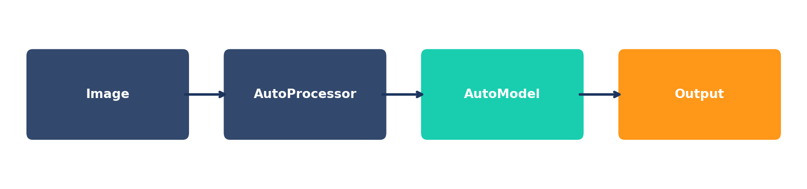
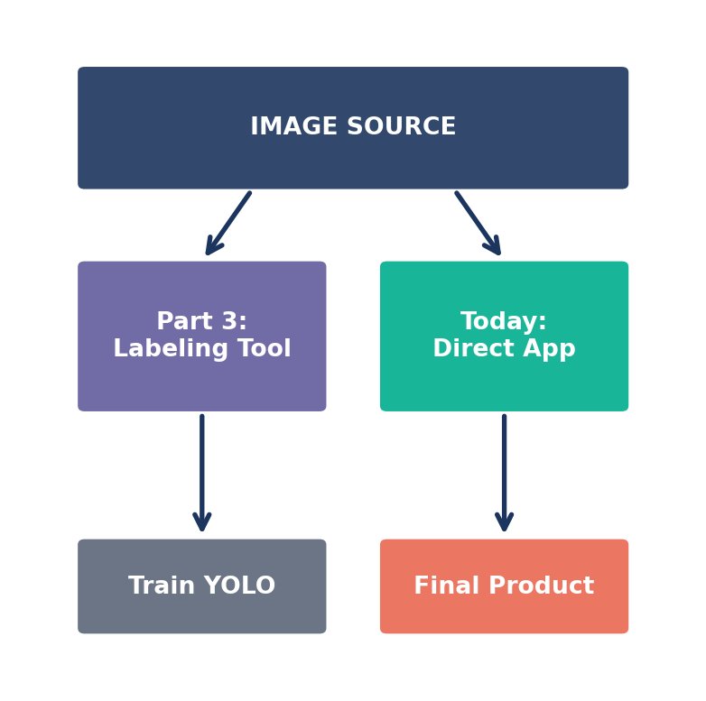
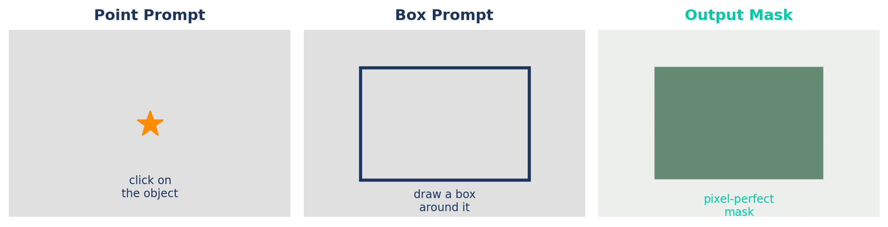
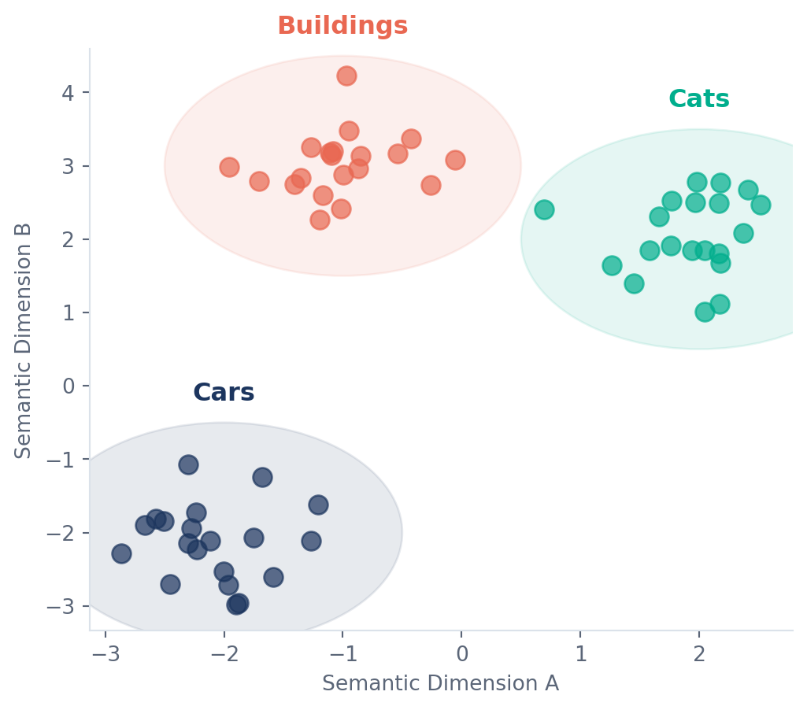
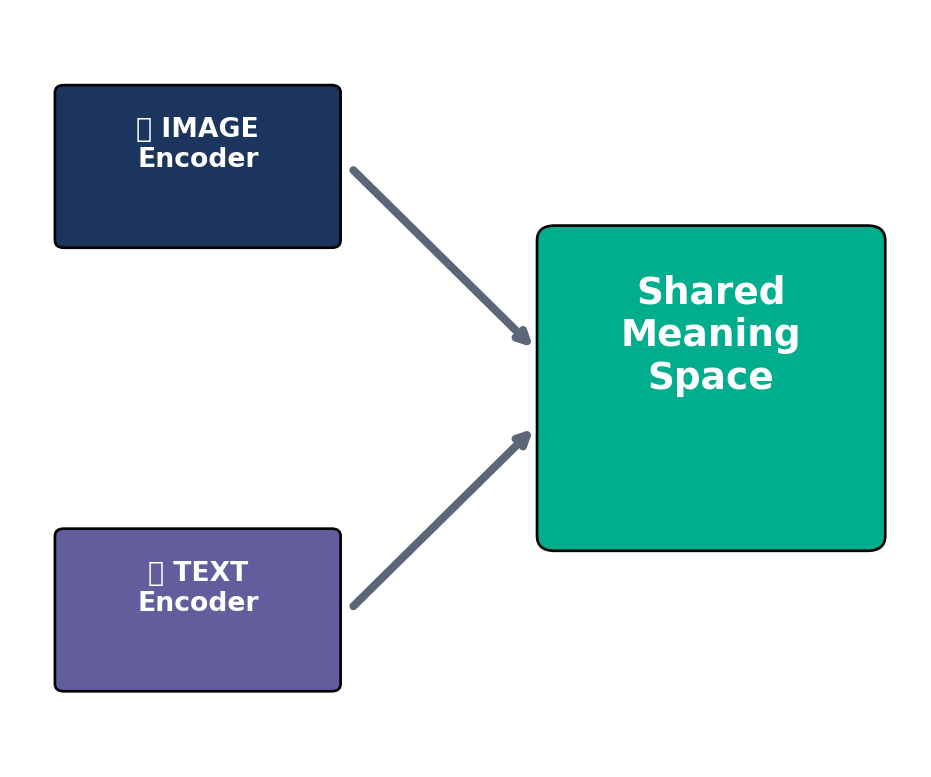
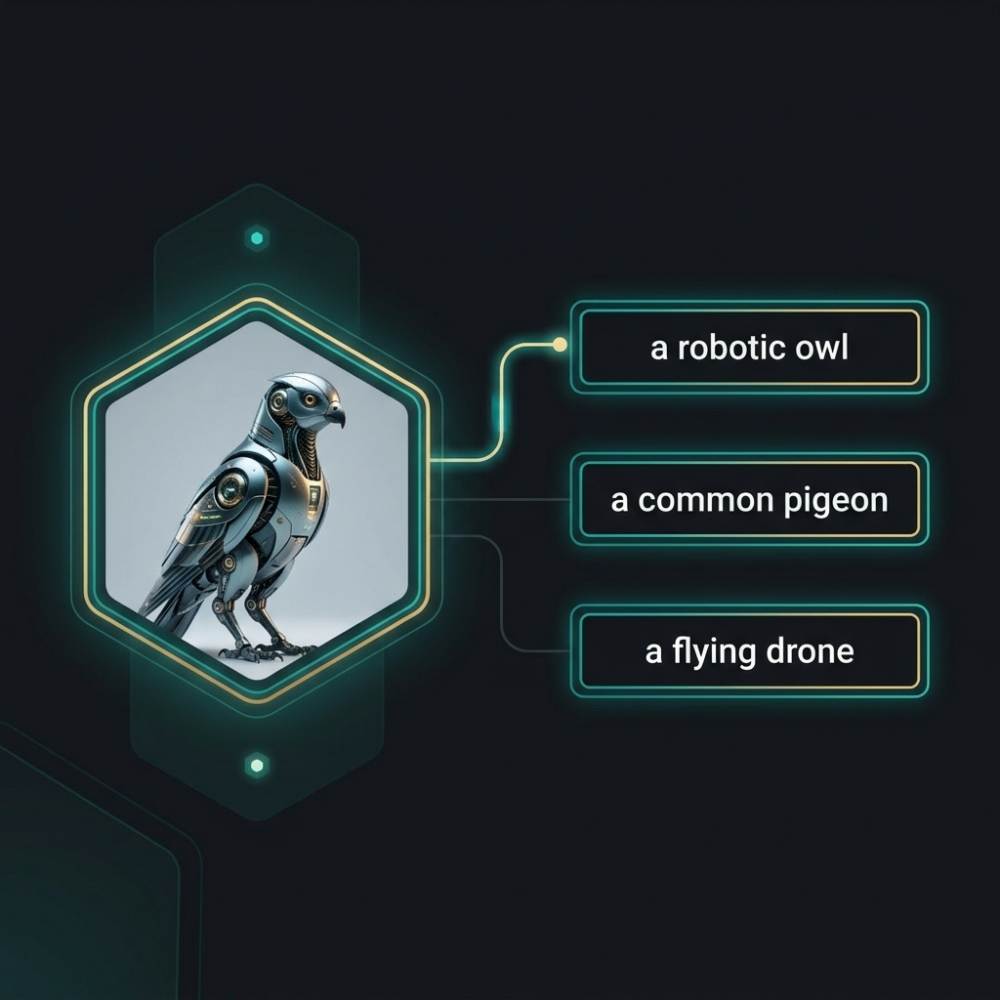
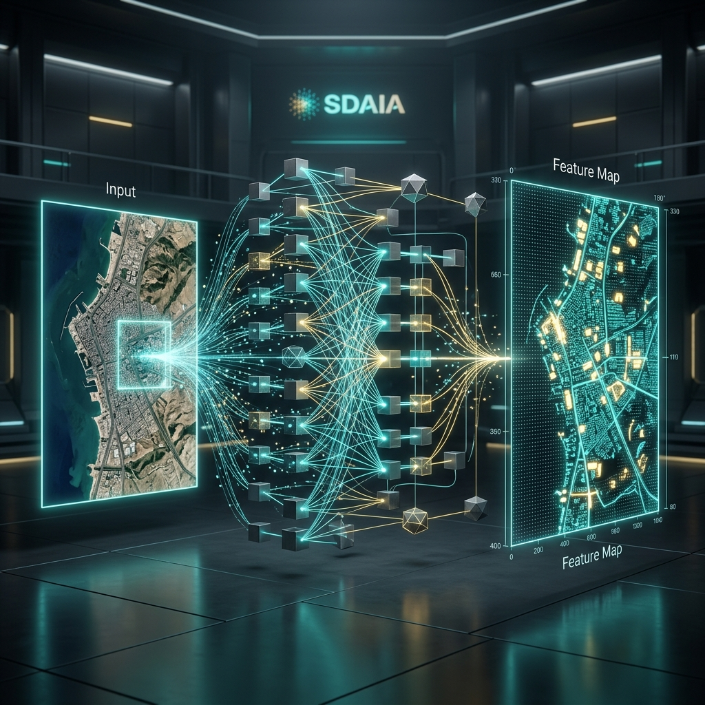
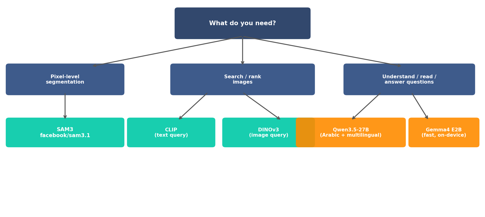

HuggingFace for Computer Vision
SAM · Embeddings · Vision LLMs
2026-04-07
Agenda
✂️
SAM3Segment any object with a point or box — no training required
🔍
Vision EmbeddingsSearch and classify images by meaning with CLIP & DINOv3
🧠
Vision LLMsAsk any question about an image — Qwen3.5 & Gemma4
📄
OCR & DocumentsRead text, extract invoice fields — all with one VLM
Prerequisites: Parts 1–5 complete. You know YOLO detect / segment / train / export.
From YOLO to HuggingFace
What YOLO gives you
- Detect, segment, classify, track — fast
- Pre-trained on COCO (80 classes)
- Fine-tune on your own data
- Export to ONNX / TensorRT for production
What HuggingFace adds
- 500k+ models across all AI tasks
- Read text, understand documents
- Segment anything without training data
- Answer natural language questions about images
HuggingFace is not a competitor to YOLO — it’s the rest of the toolkit.
1. The HuggingFace Ecosystem
One hub. One API. Every model.
What Is HuggingFace?
🗂️
Hub500k+ models, 100k+ datasets — download any model in one line of Python
⚡
transformersOne unified Python library for inference, fine-tuning, and deployment of any model
🚀
SpacesDeploy interactive Gradio apps in minutes — share your model with the world
The pipeline() API
Standardized interface for 40+ tasks
from transformers import pipeline
pipe = pipeline(
"image-classification",
model="google/vit-base"
)
res = pipe("cat.jpg")
pipe = pipeline(
"image-classification",
model="google/vit-base"
)
res = pipe("cat.jpg")
One function to rule them all. No need to learn new code for every new model.
| Feature | YOLO | HuggingFace |
|---|---|---|
| Load | YOLO(pt) |
pipeline(task) |
| Run | .predict() |
pipe() |
| Storage | Local .pt |
~/.cache/hf |
| Scope | Core CV | Everything AI |
HF is the "App Store" for AI models.
The AutoModel Pattern
from transformers import AutoProcessor, AutoModelForCausalLM
from PIL import Image
import torch
# Load separately for fine-tuning, batching, or custom logic
processor = AutoProcessor.from_pretrained("Qwen/Qwen3.5-27B")
model = AutoModelForCausalLM.from_pretrained(
"Qwen/Qwen3.5-27B", device_map="auto"
)
image = Image.open("invoice.png").convert("RGB")
inputs = processor(images=image, text="What text is in this image?",
return_tensors="pt").to(model.device)
outputs = model.generate(**inputs, max_new_tokens=256)
print(processor.decode(outputs[0], skip_special_tokens=True))Use pipeline() for exploration. Use AutoModel when you need batching, fine-tuning, or integration into a training loop.
2. SAM3 — Segment Anything
Zero-shot segmentation. Any object. No labels needed.
You’ve Already Met SAM
In Part 3, you used SAM as a labeling superpower.
- Click an object → Instant mask
- Huge time saver for training datasets
Today: We use SAM3 as an inference engine.
- No custom training data required
- SAM3.1 (2025): Better edges + video tracking
- High-quality cutouts for any application

The Prompting Idea

SAM does not need class labels. Give it a location — it figures out the object boundary.
SAM3: Point Prompt
from transformers import SamModel, SamProcessor
from PIL import Image
import torch
# Load model (cached after first download)
processor = SamProcessor.from_pretrained("facebook/sam3.1")
model = SamModel.from_pretrained("facebook/sam3.1")
model.eval()
image = Image.open("car.jpg").convert("RGB")
# Point prompt: [x, y] pixel coordinates of the object
input_points = [[[450, 300]]]
inputs = processor(
image,
input_points=input_points,
return_tensors="pt"
)
with torch.no_grad():
outputs = model(**inputs)
# Post-process: pick the highest-confidence mask
masks = processor.image_processor.post_process_masks(
outputs.pred_masks.cpu(),
inputs["original_sizes"].cpu(),
inputs["reshaped_input_sizes"].cpu()
)
best_mask = masks[0][0][outputs.iou_scores.argmax()].numpy()
# best_mask is a boolean array — True = object pixeliou_scores ranks the 3 candidate masks SAM returns. Always pick argmax() for the most confident one.
SAM3: Box Prompt — YOLO → SAM
The specific “Where” makes SAM better.
# 1. YOLO finds the box
yolo_res = yolo.predict(img)[0]
box = yolo_res.boxes.xyxy[0].tolist()
# 2. SAM converts box to mask
inputs = processor(img, input_boxes=[[box]])
with torch.no_grad():
res = model(**inputs)
# 3. Post-process to pixel mask
mask = processor.post_process_masks(
res.pred_masks, ...
)[0][0][argmax]
YOLO acts as the “eyes” (pointing) and SAM as the “surgeon” (precise cutting).
SAM3 Use Cases
🏗️
Construction MonitoringSegment excavation zones, equipment, and safety areas from drone or aerial imagery
🌴
Crop & Land AnalysisSegment individual date palm trees from satellite imagery for yield estimation
🏥
Medical ImagingSegment organs or lesions in MRI/CT scans — zero labeled training images required
🛒
Retail Product CutoutsIsolate products from shelf images for catalog photography without manual editing
3. Vision Embeddings
Teaching images to live in meaning-space.
What Is an Embedding?
Pixels tell you what color is at x, y. Embeddings tell you what the image means.
- Dense vector (e.g., 768 numbers)
- Close together = similar concepts
- Far apart = different meanings
It’s a “mental map” for AI. It doesn’t see lines; it sees identity.

CLIP: Logic Over Pixels
CLIP (OpenAI) connects words to images by watching 400M pairs.
- Contrastive Learning: Makes images and text describe each other.
- Shared “Meaning Space”.
With CLIP, you don’t “label” a model. You “describe” what you want to find.

CLIP: Zero-Shot Classification
Classify anything you can describe
CLIP scores labels against images without needing any labeled training data.
- Any Class: “overexposed”, “foggy”, “night-time”
- Rare Objects: Things YOLO wasn’t trained on
- Domain Specific: Complex terminology
[!TIP] Think of it as “Visual Entailment” — how well does this text describe this image?

CLIP: Zero-Shot Implementation
model = CLIPModel.from_pretrained("openai/clip-vit-base-patch32")
processor = CLIPProcessor.from_pretrained("openai/clip-vit-base-patch32")
image = Image.open("scene.jpg")
labels = ["construction site", "street market", "desert", "office"]
inputs = processor(text=labels, images=image, return_tensors="pt", padding=True)
output = model(**inputs)
probs = output.logits_per_image.softmax(dim=1)
for label, prob in zip(labels, probs[0]):
print(f"{label}: {prob.item():.3f}")CLIP: Image Similarity Search
Search by Visual “Meaning”
Instead of keyword matching, find images that look like the query image.
- Embed: Convert library into vectors (once).
- Query: Embed the target image.
- Match: Calculate similarity score.
For millions of images, use a vector DB like FAISS or Qdrant for scalability.
Common Use Cases:
- E-commerce recommendations
- Quality control (finding defects)
- Duplicate detection in datasets
CLIP: Similarity Implementation
def embed(path):
img = Image.open(path).convert("RGB")
inputs = processor(images=img, return_tensors="pt")
with torch.no_grad():
feat = model.get_image_features(**inputs)
return F.normalize(feat, dim=-1)
# 1. Build index
image_paths = ["img1.jpg", "img2.jpg", ...]
index = torch.cat([embed(p) for p in image_paths])
# 2. Query
query = embed("query.jpg")
scores = (query @ index.T).squeeze()
top5 = scores.topk(5).indicesDINOv3: The Vision Backbone
Why DINOv3?
DINO learns from images alone — no text captions needed.
- Universal Backbone: Works for any domain (X-ray, Satellite).
- Spatial Precision: Excellent for segmentation and depth.
- Robustness: Learns a deeper understanding of object geometry.
CLIP vs. DINO:
- CLIP: Best for text-image tasks (search, zero-shot).
- DINO: Best for pure vision tasks (retrieval, geometry).

DINOv3: Feature Extraction
MODEL = "facebook/dinov3-vitb16-pretrain-lvd1689m"
model = AutoModel.from_pretrained(MODEL, device_map="auto")
proc = AutoImageProcessor.from_pretrained(MODEL)
image = load_image("satellite_crop.jpg")
inputs = proc(images=image, return_tensors="pt").to(model.device)
with torch.inference_mode():
out = model(**inputs)
# Global embedding (image-level)
global_feat = out.pooler_output
# Patch-level features (pixel-level detail)
patch_feats = out.last_hidden_stateCLIP vs DINOv3
| CLIP | DINOv3 | |
|---|---|---|
| Training data | Image + text pairs | Images only (self-supervised) |
| Zero-shot via text | ✅ Yes | ❌ Image-only search |
| Spatial detail | Moderate (global) | Excellent (patch-level) |
| Best for | Text-guided search, zero-shot classify | Image-only retrieval, fine-grained tasks |
Rule of thumb: if you can describe what you’re looking for in words, use CLIP. If you have an example image, DINOv3 gives richer features.
Embedding Use Cases
🛒
E-Commerce SearchCustomers upload a photo → find visually matching products in your catalog
🏥
Medical RetrievalFind historical scans similar to a patient's current imaging — no labels needed
🛰️
Satellite & GeospatialQuery large-scale image archives by visual similarity — land cover, change detection
🔬
Dataset CurationFind near-duplicate images or cluster unlabeled data before training
4. Vision Language Models
Models that see, reason, and answer in language.
The Vision Intelligence Ladder

You’ve now learned every level of this ladder across Parts 1–6.
What Is a Vision LLM?
🖼 Image
+
💬 "How many people are wearing helmets?"
→
Model
→
"3 out of 5 workers are wearing helmets."
Three things the model does:
- Sees the image — encodes it into visual tokens (similar to how CLIP or DINOv3 works)
- Reads your question — processes it as text tokens
- Generates an answer — attends to both image and text together
No class list. No bounding boxes. Just ask your question in plain language.
The pipeline Entry Point
The fastest way to get started — same pattern as always.
from transformers import pipeline
from PIL import Image
# Visual question answering
vqa = pipeline(
"visual-question-answering",
model="Qwen/Qwen3.5-27B",
device_map="auto"
)
image = Image.open("factory_floor.jpg")
result = vqa(
image=image,
question="Are all workers wearing safety helmets?"
)
print(result)
# [{'answer': 'No, one worker on the left is not
# wearing a helmet.', 'score': 0.94}]Tasks available via pipeline():
| Task string | Use for |
|---|---|
"visual-question-answering" |
VQA |
"image-to-text" |
Captioning / OCR |
"any-to-any" |
Gemma4 multimodal |
device_map="auto" distributes the model across available GPUs automatically.
Qwen3.5: Multilingual Visual Reasoning
Qwen/Qwen3.5-27B
- Vision + video + text — unified multimodal
- 262K token context window
- Strong Arabic and multilingual support
- Apache 2.0 license
- Thinking mode by default (generates reasoning before answering)
Ideal for Arabic-language applications — government documents, Arabic signage, mixed Arabic/English invoices.
from transformers import AutoProcessor, AutoModelForCausalLM
from PIL import Image
import torch
processor = AutoProcessor.from_pretrained("Qwen/Qwen3.5-27B")
model = AutoModelForCausalLM.from_pretrained(
"Qwen/Qwen3.5-27B", device_map="auto",
torch_dtype=torch.bfloat16)
image = Image.open("construction_site.jpg").convert("RGB")
messages = [{
"role": "user",
"content": [
{"type": "image", "image": image},
{"type": "text",
"text": "كم عدد العمال الذين يرتدون الخوذات؟"},
# "How many workers are wearing helmets?"
]
}]
inputs = processor.apply_chat_template(
messages, return_tensors="pt"
).to(model.device)
outputs = model.generate(**inputs, max_new_tokens=256)
print(processor.decode(outputs[0], skip_special_tokens=True))Gemma4: Lightweight On-Device Vision
google/gemma-4-E2B-it
- 2.3B effective parameters — fast and practical
- True multimodal: image + text + audio inputs
- Open weights, Apache 2.0 license
- Runs on a single consumer GPU
- Uses
pipeline("any-to-any")
E2B = “Effective 2B” — a Mixture-of-Experts model activating only 2.3B params per token, with a much larger total capacity.
from transformers import pipeline
from PIL import Image
pipe = pipeline(
"any-to-any",
model="google/gemma-4-E2B-it",
device_map="auto"
)
image = Image.open("invoice.jpg")
messages = [{
"role": "user",
"content": [
{"type": "image", "image": image},
{"type": "text",
"text": "Describe what you see in this image."},
]
}]
result = pipe(messages, max_new_tokens=200,
return_full_text=False)
print(result[0]["generated_text"])For Arabic text in images, prefer Qwen3.5 — Gemma4 E2B has stronger performance in English.
OCR as a VLM Use Case
Why use a VLM for OCR?
- Handles Arabic, handwriting, curved text, and mixed scripts without special models
- Understands context — not just characters, but what the text means
- Works on full documents, not just single-line crops
- One model for everything
No TrOCR. No LayoutLM. No separate OCR pipeline — just ask the model.
from transformers import AutoProcessor, AutoModelForCausalLM
from PIL import Image
import torch
processor = AutoProcessor.from_pretrained("Qwen/Qwen3.5-27B")
model = AutoModelForCausalLM.from_pretrained(
"Qwen/Qwen3.5-27B", device_map="auto",
torch_dtype=torch.bfloat16)
image = Image.open("arabic_sign.jpg").convert("RGB")
messages = [{
"role": "user",
"content": [
{"type": "image", "image": image},
{"type": "text", "text": "What text appears in this image? "
"Transcribe it exactly."},
]
}]
inputs = processor.apply_chat_template(
messages, return_tensors="pt"
).to(model.device)
outputs = model.generate(**inputs, max_new_tokens=256)
print(processor.decode(outputs[0], skip_special_tokens=True))Document Understanding
Plain OCR gives you raw text.
A VLM gives you structured understanding — it knows that a number at the bottom-right of an invoice is likely the total.
Use case: Invoice and document processing
- Extract fields like totals, dates, and IDs
- Return structured JSON — no regex, no templates
- Works across different layouts and languages
State-of-the-art document extraction in 5 lines.
import json
from PIL import Image
image = Image.open("invoice.jpg").convert("RGB")
prompt = """Extract the following fields from this invoice
and return a JSON object:
{
"vendor_name": "...",
"invoice_date": "...",
"invoice_number": "...",
"subtotal": "...",
"tax_amount": "...",
"total": "..."
}
Return only the JSON, no extra text."""
messages = [{
"role": "user",
"content": [
{"type": "image", "image": image},
{"type": "text", "text": prompt},
]
}]
inputs = processor.apply_chat_template(
messages, return_tensors="pt"
).to(model.device)
outputs = model.generate(**inputs, max_new_tokens=512)
text = processor.decode(outputs[0], skip_special_tokens=True)
data = json.loads(text)
print(data["total"]) # "1,150.00"When to Use What

Conclusion
Your expanded Computer Vision toolkit.
Your Complete Toolkit
🎯
YOLO (Ultralytics)Detect · Segment · Pose · Track — fast, production-ready, exportable
✂️
SAM3Zero-shot segmentation — any object, any domain, point or box prompt
🔍
CLIP + DINOv3Semantic image search — by text description or visual similarity
🧠
Qwen3.5 + Gemma4Visual reasoning, OCR, document understanding — ask anything in any language
When to Use What
- Detect / count / track known classes at speed → YOLO
- Segment any object without training data → SAM3 (
facebook/sam3.1)
- Search images by text description → CLIP (
openai/clip-vit-base-patch32)
- Search images by visual similarity only → DINOv3 (
facebook/dinov3-vitb16-pretrain-lvd1689m)
- Answer questions, read text, understand documents → Qwen3.5 / Gemma4
- Arabic language or multilingual → Qwen3.5 (
Qwen/Qwen3.5-27B)
- Fast, lightweight, on-device → Gemma4 E2B (
google/gemma-4-E2B-it)
The pattern is always the same: Processor + Model + generate/predict. Learning one teaches you the template for all.
Q&A
Thank You!
Any questions?